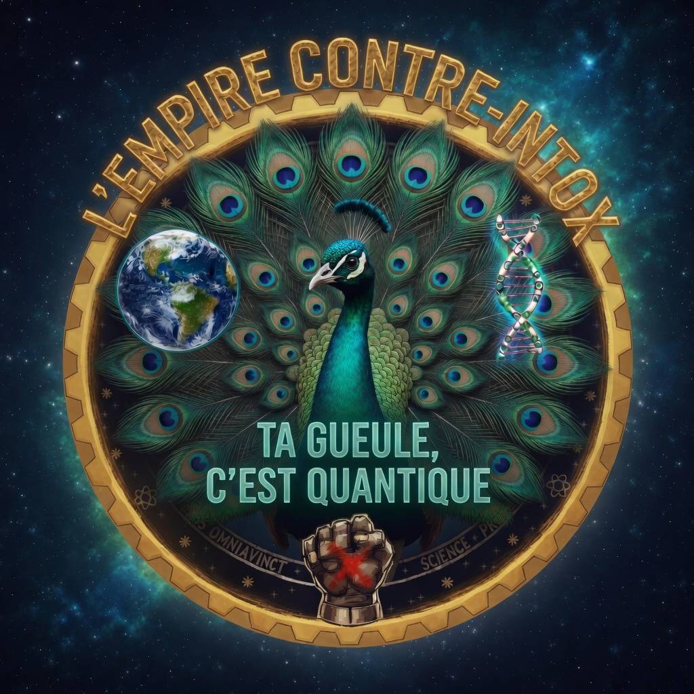
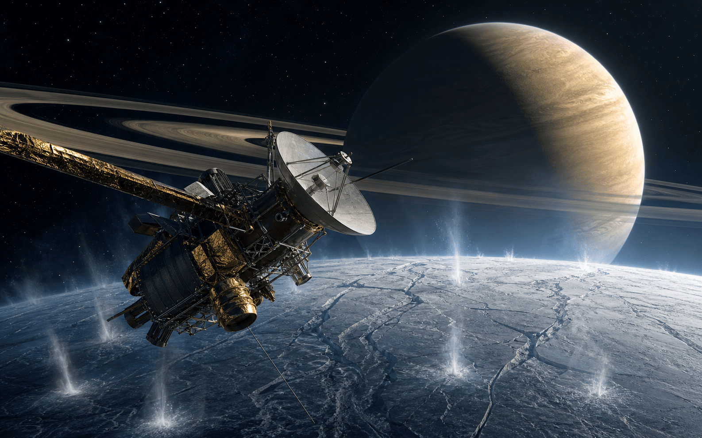
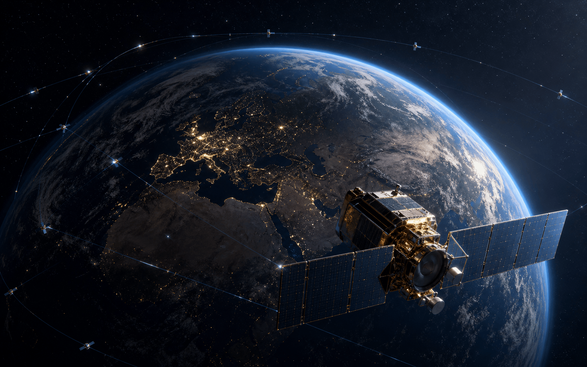
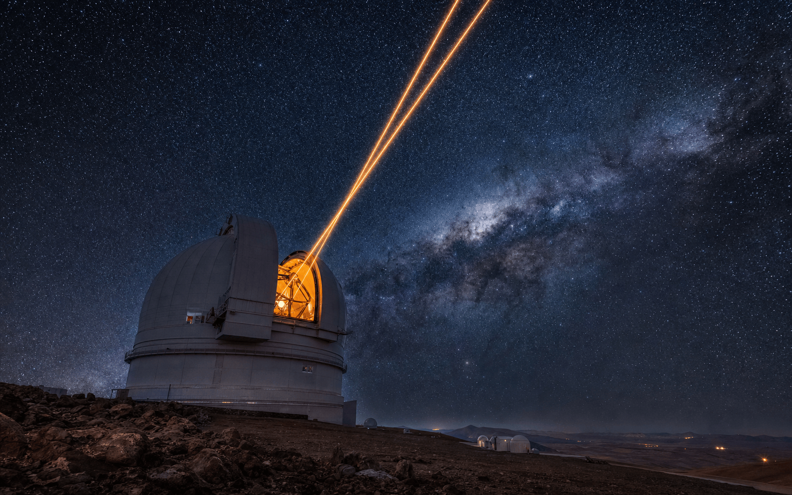
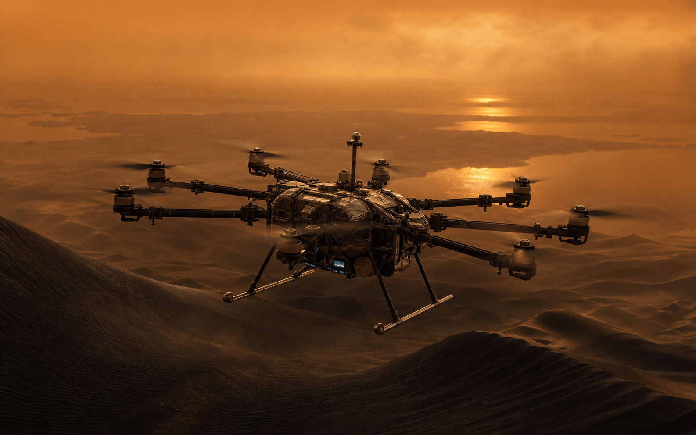
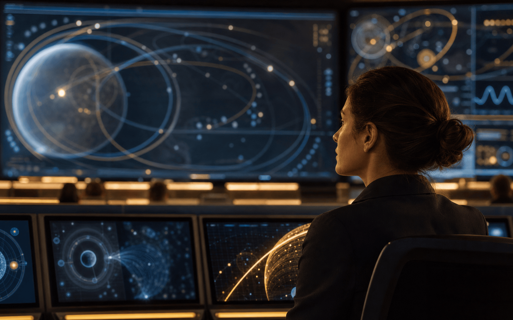

Soixante-dix ans d'yeux et de voyageuses : satellites qui veillent, sondes qui s'exilent, télescopes qui scrutent. De Sputnik (1957) aux rotors de Dragonfly sur Titan — chaque masse, chaque date, chaque distance, mesurée, vérifiée, sourcée.
« En 1957, l'humanité ne possédait pas un seul objet hors de l'atmosphère. En 2026, elle en compte des dizaines de milliers — et deux d'entre eux, lancés il y a près d'un demi-siècle, murmurent encore depuis l'espace entre les étoiles. »
Tout ce qui vole au-dessus de nos têtes appartient à l'une de quatre familles — les confondre, c'est s'interdire de comprendre l'aventure spatiale. Ce dossier les distingue d'emblée, puis déroule soixante-dix ans d'ingénierie, du premier bip de Sputnik aux miroirs de quarante mètres.
Le contenu est de Provoxys ; la vérification des chiffres et la traçabilité, de l'Empire contre Intox ; et à chaque étape, Lalie nomme celles qu'on oublie — « Les Femmes de l'Espace », le cerveau et l'architecte de ces machines.
Sputnik 1 — premier satellite ; l'ère spatiale s'ouvre dans la peur et la vitesse.
Voyager 1 & 2 — le Grand Tour des géantes, puis l'espace interstellaire.
Du bip de Sputnik aux biosignatures de Titan : la chaîne complète.
L'ingénierie
Matériaux, énergie (chimique, solaire, nucléaire/RTG), propulsion, télécommunications : survivre là où l'humain ne peut pas.
Les familles
Orbites (LEO, MEO, GEO), types de sondes, télescopes spatiaux et terrestres : une taxonomie pour ne plus jamais confondre.
Les premières
Premier satellite, première face cachée, premier alunissage en douceur, premier objet interstellaire : la chaîne des records.
Chapitre 1 · La taxonomie
Satellite, sonde, télescope : qui fait quoi
01
Quatre familles de machines, une seule quête : voir, comprendre, et ne pas se laisser raconter d'histoires.
Explication les quatre familles
Un satellite tourne en rond. Il reste prisonnier de la gravité d'un corps — presque toujours la Terre — et y accomplit une mission continue ou répétée : téléphoner, guider, photographier, surveiller. On peut parfois le réparer ou le remplacer.
Une sonde, elle, fait ses adieux. Elle s'arrache à l'attraction terrestre pour un voyage vers une autre planète, une comète, ou le vide entre les étoiles. Autonomie totale, radiations dures, ordres reçus à des heures-lumière de distance via le Deep Space Network, et, le plus souvent, aucun retour. On la décline en flyby (survol), orbiter, lander (atterrisseur), rover (véhicule) ou sample return (retour d'échantillons).
Un télescope regarde loin. Dans l'espace (Hubble, Webb), il jouit d'une vision parfaite, sans le voile de l'air — mais son miroir est limité par la coiffe de la fusée. Au sol, il s'offre des miroirs colossaux, au prix d'une atmosphère turbulente qu'il corrige en temps réel.
Les distinguer, ce n'est pas pédanterie : c'est la condition pour lire correctement chaque exploit. Tout le reste du dossier en découle — l'aube de l'ère spatiale, puis les trois familles tour à tour.
Explication le RTG : alimenter une sonde sans Soleil
Au-delà de Jupiter, la lumière solaire devient trop faible pour des panneaux. La parade : le générateur thermoélectrique à radioisotope (RTG). Un bloc de plutonium-238, en se désintégrant, dégage une chaleur constante ; des centaines de thermocouples convertissent l'écart de température entre ce bloc brûlant et l'espace glacé en électricité — sans aucune pièce mobile, pendant des décennies. C'est le cœur nucléaire des Voyager, de Cassini, de New Horizons et de Perseverance.

Réalisé parProvoxys & Lalieavec le soutien de Samlepirate (Atlas & intégration)
Chapitre 2 · L'exil volontaire
Les sondes
02
Une sonde ne revient pas. Elle quitte la Terre comme on quitte un port sans billet de retour, emportant juste assez d'énergie, d'instruments et d'intelligence pour survivre seule, des années durant, là où nul humain ne tiendrait une seconde.

Survol d'une lune glacée — geysers d'eau, anneaux et silence cosmique
Ouverture du live
Mesdames et Messieurs, chers passionnés d'astronomie et de sciences spatiales, bonsoir et bienvenue dans ce live exceptionnel et enrichi.
Bonsoir à tous et à toutes ! Merci d'être aussi nombreux ce soir à nous rejoindre pour cette exploration passionnante. Avant de commencer, laissez-moi vous poser une petite question pour briser la glace : quelle est la première image ou la première mission spatiale qui vous a vraiment marqué dans votre vie ? Écrivez-la dans le chat, j'adorerais lire vos réponses en direct pendant que nous avançons ! Et n'oubliez pas, ce live est fait pour échanger, alors posez vos questions à tout moment, je ferai de mon mieux pour y répondre en direct. Prêts ? Allons-y ensemble !
Aujourd'hui, nous plongeons dans l'histoire complète des premières sondes lancées depuis la fin des années 1950 jusqu'en 2026, ainsi que les missions futures de 2026 à 2030 et au-delà. Nous ferons exactement la même chose pour les satellites artificiels, les télescopes optiques au sol et les télescopes radio. Nous explorerons en profondeur le fonctionnement de l'optique adaptative avec tous ses détails techniques, les contributions décisives de chercheuses et chercheurs emblématiques, des anecdotes passionnantes, et les synergies entre toutes ces technologies. Nous ajouterons également l'histoire détaillée des télescopes spatiaux infrarouges et des sections approfondies sur les missions Artemis et Dragonfly. Chaque élément sera développé en détail sans aucun résumé.
Et pour commencer ce voyage, je vous invite à imaginer avec moi le frisson de ces premiers pas dans l'espace. C'est parti !
Les pionnières soviétiques — toutes les portes ouvertes en premier
Sonde Luna 1
Lancée le 2 janvier 1959 par l'Union soviétique, Luna 1 est la première sonde à quitter l'orbite terrestre. Elle a survolé la Lune à 5 995 kilomètres et est entrée en orbite héliocentrique. Elle transportait des instruments pour mesurer le vent solaire et le champ magnétique, sous la direction des ingénieurs et scientifiques du bureau de conception OKB-1 dirigé par Sergueï Korolev. Une anecdote historique est que Luna 1 a manqué la Lune de quelques milliers de kilomètres à cause d'une erreur de calcul, mais a tout de même fourni des données précieuses sur le vent solaire, marquant le début de l'exploration interplanétaire.
Au liveLuna 1, le tout premier pas hors de l'orbite terrestre… Le début de tout ! Et vous, quelle est la mission lunaire qui vous passionne le plus aujourd'hui ?
Sonde Luna 2
Lancée le 12 septembre 1959, Luna 2 est devenue le premier objet fabriqué par l'homme à atteindre la surface de la Lune le 14 septembre 1959. Elle transportait des sphères avec des fanions soviétiques qui se sont dispersés à l'impact, sous la direction de l'équipe de Korolev. Une anecdote symbolique est que les fanions dispersés sur la Lune ont marqué la première « empreinte » humaine sur un autre corps céleste, un geste chargé de fierté nationale et de vision scientifique.
Au liveLuna 2, le premier impact contrôlé sur la Lune… Un moment symbolique ! Avez-vous déjà vu des images de ces premiers fanions lunaires ?
Sonde Luna 3
Lancée le 4 octobre 1959, Luna 3 a photographié pour la première fois la face cachée de la Lune le 7 octobre 1959. Les images, développées à bord et transmises par radio, ont révélé un paysage très différent de la face visible, avec moins de mers et plus de cratères, grâce au travail des scientifiques et ingénieurs soviétiques. Une anecdote révolutionnaire est que ces premières photos de la face cachée ont choqué la communauté scientifique mondiale et ont ouvert la voie à des décennies d'exploration lunaire détaillée.
Au liveLuna 3 et la première photo de la face cachée… Une révélation qui a changé notre vision de la Lune ! Quelle image lunaire vous a le plus surpris dans votre vie ?
Mars, longtemps le cimetière des sondes
Sonde Viking 1
Lancée le 20 août 1975, Viking 1 s'est posée dans la plaine de Chryse Planitia sur Mars le 20 juillet 1976. Elle a transmis les premières images en couleur de la surface martienne et a réalisé des expériences de biologie avec son bras robotique et son laboratoire miniaturisé, sous la direction du project scientist Gerald Soffen. Une anecdote fondatrice est que les premières images en couleur de Mars ont été reçues avec une émotion immense par l'équipe, et que les expériences de biologie, bien que controversées, ont ouvert le débat sur la possible vie microbienne sur Mars.
Au liveViking 1, le premier atterrissage réussi sur Mars… Un moment qui a ouvert la porte à tout ce qui a suivi. Avez-vous déjà vu ces premières photos en couleur de Mars ? Partagez vos souvenirs !
Sonde Viking 2
Lancée le 9 septembre 1975, Viking 2 s'est posée dans la plaine d'Utopia Planitia le 3 septembre 1976. Elle a poursuivi les études géologiques et biologiques et a fourni des images stéréo de la surface, sous la même direction scientifique que Viking 1. Une anecdote complémentaire est que les deux atterrissages ont fonctionné en parallèle pendant des années, fournissant des données comparatives précieuses sur deux sites martiens différents et posant les bases de l'exploration robotique moderne.
Au liveViking 2 qui a complété le duo historique… Deux atterrissages, deux mondes explorés. Quelle mission martienne vous inspire le plus aujourd'hui ?
Sonde MAVEN
Lancée le 18 novembre 2013, MAVEN est entrée en orbite autour de Mars le 22 septembre 2014. Elle étudie l'atmosphère martienne et son interaction avec le vent solaire. Ses instruments ont mesuré la perte continue d'atmosphère au fil des milliards d'années, expliquant pourquoi Mars est passée d'un monde potentiellement habitable à un désert froid, sous la direction de la project scientist Shannon Curry. MAVEN continue ses observations en 2026. Une anecdote marquante est que MAVEN a détecté des aurores martiennes invisibles à l'œil nu et a cartographié l'évasion de l'atmosphère, fournissant des indices cruciaux pour comprendre l'évolution climatique de Mars et les conditions nécessaires à la vie ailleurs.
Au liveMAVEN qui nous raconte l'histoire de l'atmosphère perdue de Mars… Une leçon pour notre propre planète. Avez-vous déjà réfléchi à ce que cela signifie pour la recherche de vie ailleurs ? Dites-le dans le chat !
Sonde Perseverance + Ingenuity
Lancée le 30 juillet 2020, Perseverance s'est posée dans le cratère Jezero sur Mars le 18 février 2021. Elle collecte des échantillons de roche et de sol qui seront ramenés sur Terre par une future mission. Son bras robotique fore des carottes et les stocke dans des tubes hermétiques, sous la direction du project scientist Ken Farley et de la project manager Jennifer Trosper. L'hélicoptère Ingenuity, déployé le 3 avril 2021, a réalisé le premier vol motorisé sur une autre planète le 19 avril 2021 et a effectué plus de soixante-dix vols de reconnaissance, prouvant la faisabilité des aéronefs sur Mars, grâce au travail visionnaire de Bob Balaram comme chief engineer et de l'équipe du Jet Propulsion Laboratory. Perseverance étudie la géologie ancienne du cratère, recherche des biosignatures passées et prépare le terrain pour l'exploration humaine. Une anecdote inspirante est que Ingenuity a été conçu comme une démonstration technologique risquée, et que son premier vol a été suivi en direct par des millions de personnes dans le monde, prouvant que l'innovation audacieuse peut transformer l'exploration planétaire.
Au livePerseverance et son petit hélicoptère Ingenuity… Le premier vol sur Mars, c'est tout simplement magique ! Et vous, aimeriez-vous piloter un drone sur la planète rouge un jour ? Dites-moi vos rêves d'exploration dans le chat !
Perseverance, en 3D — le rover six-roues, son mât et son bras ; alimenté par RTG, il roule toujours dans le cratère Jezero ; Ingenuity, cloué au sol depuis janvier 2024Modèle Sketchfab · CC0 ↗
Les éclaireurs et le Grand Tour
Sonde Pioneer 10
Lancée le 3 mars 1972, Pioneer 10 a été la première sonde à survoler Jupiter en décembre 1973. Elle a fourni les premières images rapprochées de la planète et de ses lunes et a continué vers l'espace interstellaire, portant une plaque avec des dessins représentant l'humanité, conçue par Carl Sagan et Frank Drake. Une anecdote émouvante est que la plaque Pioneer, avec ses dessins de l'homme et de la femme, a été critiquée à l'époque pour son anthropocentrisme, mais reste un symbole puissant de notre désir de communiquer avec l'inconnu.
Au livePioneer 10, la première à toucher Jupiter de près… Et cette plaque qui voyage encore aujourd'hui. Si vous pouviez ajouter un dessin à cette plaque, que serait-ce ? Dites-le dans le chat !
Sonde Pioneer 11
Lancée le 6 avril 1973, Pioneer 11 a survolé Jupiter en 1974 puis Saturne en 1979. Elle a fourni des données sur les champs magnétiques et les anneaux de Saturne avant de quitter le système solaire, sous la direction de l'équipe Pioneer dirigée par Charles Hall. Une anecdote historique est que Pioneer 11 a été la première à visiter Saturne de près, et que ses données ont préparé le terrain pour les missions Voyager qui ont suivi peu après.
Au livePioneer 11 qui a complété le tableau avec Saturne… Une belle paire de pionnières ! Quelle découverte de Pioneer vous a le plus marqué ?
Sonde Voyager 1
Lancée le 5 septembre 1977, Voyager 1 a survolé Jupiter en mars 1979 et Saturne en novembre 1980. À Jupiter, elle a découvert les volcans actifs d'Io, les premiers observés hors de la Terre, les anneaux fins de Jupiter et les détails complexes des ceintures de radiation, grâce au travail du project scientist Edward C. Stone qui a dirigé la mission pendant plus de quarante ans. À Saturne, elle a révélé la structure des anneaux et la géologie de Titan. En août 2012, Voyager 1 est devenue le premier objet fabriqué par l'homme à entrer dans l'espace interstellaire en traversant l'héliopause. Elle continue d'émettre des données en juin 2026 à plus de cent soixante unités astronomiques du Soleil, mesurant le plasma interstellaire et les rayons cosmiques galactiques. La Golden Record qu'elle transporte, conçue par Carl Sagan et son équipe internationale incluant Ann Druyan, Timothy Ferris et Frank Drake, contient les sons de la Terre, des salutations en cinquante-cinq langues, de la musique classique et des images encodées représentant la vie sur notre planète. Une anecdote émouvante est que Carl Sagan a insisté pour inclure des sons de la Terre comme le chant des baleines et le rire d'un enfant, créant un message poétique et humain destiné aux étoiles, et que l'équipe a travaillé des années pour sélectionner les meilleurs contenus malgré les contraintes techniques de l'époque.
Au liveEt là, chers amis, on touche à quelque chose d'extraordinaire. Voyager 1 qui continue de parler à la Terre après presque cinquante ans… Quelle aventure ! Si vous étiez à bord, quel message auriez-vous glissé sur la Golden Record ? Partagez vos idées dans le chat, j'adore lire vos propositions créatives !
Sonde Voyager 2
Lancée le 20 août 1977, Voyager 2 a suivi une trajectoire qui lui a permis de survoler Jupiter en 1979, Saturne en 1981, Uranus en 1986 et Neptune en 1989. À Uranus, elle a découvert les anneaux fins et les dix nouvelles lunes grâce aux instruments et à l'analyse de l'équipe dirigée par Edward C. Stone. À Neptune, elle a révélé les vents les plus rapides du système solaire et les geysers de glace d'azote sur Triton. Comme sa sœur, elle reste active en 2026 et explore l'héliopause depuis une direction différente, fournissant des données complémentaires sur le milieu interstellaire. Une anecdote remarquable est que Voyager 2 a été la seule sonde à visiter Uranus et Neptune, et que l'équipe a dû reprogrammer les instruments à distance pendant des années pour maximiser les découvertes malgré la distance croissante et les signaux de plus en plus faibles.
Au liveVoyager 2, la grande voyageuse qui a tout vu… Uranus, Neptune, et maintenant l'espace interstellaire. Quelle leçon de persévérance ! Et vous, quelle planète du système solaire aimeriez-vous visiter en priorité si vous pouviez choisir ? Dites-le-moi tout de suite dans le chat !
Voyager, en 3D — la parabole de 3,7 m, les trois RTG, la perche du magnétomètre de 13 m, et le Disque d'or ; à ≈ 173 UA, son signal met plus de 23 h à nous parvenirModèle Sketchfab · NASA ↗
Les maîtres des géantes et les mondes lointains
Sonde Cassini-Huygens
Lancée le 15 octobre 1997, Cassini-Huygens est arrivée en orbite autour de Saturne le 1er juillet 2004 après un voyage de près de sept ans utilisant des assistances gravitationnelles. La sonde orbiteur a cartographié les anneaux avec une précision sans précédent, découvert de nouveaux satellites et analysé la magnétosphère de Saturne, sous la direction de la project scientist Linda Spilker de la NASA et avec les contributions majeures de Carolyn Porco pour l'équipe d'imagerie. Le 14 janvier 2005, la sonde Huygens s'est posée sur Titan, révélant un monde avec des lacs et des rivières de méthane liquide, des dunes de sable organique et une chimie prébiotique complexe, grâce au travail acharné de Jean-Pierre Lebreton et de l'équipe ESA qui a conçu et suivi l'atterrissage historique. La mission s'est terminée le 15 septembre 2017 par une descente contrôlée dans l'atmosphère de Saturne pour éviter toute contamination future des lunes. Une anecdote intense est que l'équipe de Huygens a attendu avec anxiété pendant plus d'une heure après l'atterrissage, le signal arrivant avec un retard de plus de deux heures, avant de célébrer la première image depuis la surface de Titan, un moment gravé dans l'histoire de l'exploration spatiale.
Au liveCassini et son atterrissage sur Titan… Un moment historique qui nous a ouvert les portes d'un monde liquide et organique. Si vous pouviez poser une question à l'équipe de Cassini aujourd'hui, quelle serait-elle ? Écrivez-la dans le chat, je suis curieux de lire vos réflexions !
Lancée le 19 janvier 2006, New Horizons a survolé Pluton et sa lune Charon le 14 juillet 2015 à une distance de seulement 12 500 kilomètres. Elle a révélé des plaines de glace d'azote en forme de cœur, des montagnes de glace d'eau et une atmosphère ténue s'échappant dans l'espace, grâce au project scientist Alan Stern et à l'équipe du Southwest Research Institute. Après Pluton, elle a survolé l'objet de la ceinture de Kuiper Arrokoth en 2019, montrant un monde binaire primitif. Elle continue d'explorer la ceinture de Kuiper en 2026 et envoie des données sur la composition des objets transneptuniens. Une anecdote fascinante est que l'équipe a dû attendre des mois après le survol de Pluton pour recevoir toutes les données haute résolution, et que la découverte du « cœur » de Pluton a ému des millions de personnes à travers le monde, symbolisant la beauté inattendue des mondes lointains.
Au liveNew Horizons qui nous a offert le cœur de Pluton… Une découverte qui a changé notre vision des mondes lointains. Quelle image de Pluton vous a le plus touché ? Partagez-la dans le chat !
Sonde Juno
Lancée le 5 août 2011, Juno est entrée en orbite polaire autour de Jupiter le 4 juillet 2016. Elle étudie la structure interne de Jupiter, sa magnétosphère et ses aurores polaires avec des instruments comme le radiomètre micro-ondes MWR qui sonde sous les nuages et le magnétomètre, sous la direction de la project scientist Scott Bolton. Juno a révélé que le champ magnétique de Jupiter est irrégulier et que la planète possède un noyau dilué. Elle continue ses survols rapprochés en 2026. Une anecdote captivante est que Juno a été la première sonde à voler au-dessus des pôles de Jupiter, et que ses images des aurores polaires ont révélé des structures magnétiques complexes que personne n'avait imaginées, grâce à l'analyse minutieuse de l'équipe scientifique internationale.
Au liveJuno qui danse autour de Jupiter et nous révèle ses secrets cachés… Magnifique ! Et vous, quelle planète gazeuse aimeriez-vous explorer en priorité ? Jupiter ou Saturne ? Votez dans le chat !
Cassini, en 3D — la haute antenne de 4 m, les RTG, et la sonde Huygens accrochée au flanc ; vaporisée volontairement dans Saturne le 15 sept. 2017Modèle Sketchfab · NASA ↗
New Horizons, en 3D — la parabole triangulaire, le RTG sur le flanc, la silhouette de piano à queue ; aujourd'hui dans la ceinture de Kuiper, à ≈ 64 UAModèle Sketchfab · NASA ↗
Les sentinelles du Soleil
Sonde SOHO
La sonde SOHO, lancée le 2 décembre 1995 par une collaboration entre l'ESA et la NASA, est positionnée au point de Lagrange L1 entre la Terre et le Soleil. Le projet scientifique a été dirigé par le project scientist Richard Harrison de l'ESA, avec des contributions majeures de Guenter Brueckner et son équipe du Naval Research Laboratory pour l'instrument LASCO qui a capturé des milliers d'images spectaculaires des éjections de masse coronale, permettant de comprendre comment ces événements gigantesques affectent notre planète et nos technologies. L'instrument EIT a été développé sous la direction de Jean-Pierre Delaboudinière, offrant des vues détaillées de la chromosphère et de la couronne dans l'extrême ultraviolet avec une précision révolutionnaire. Le MDI, dirigé par Philip Scherrer de l'université de Stanford, a révolutionné l'héliosismologie en analysant les vibrations du Soleil comme un immense instrument de musique cosmique. Une anecdote passionnante est que SOHO a permis à des milliers d'astronomes amateurs du monde entier de découvrir plus de 5 000 comètes en analysant les données publiques en ligne, transformant des citoyens ordinaires en découvreurs d'espace et créant une véritable communauté scientifique citoyenne. Les données de SOHO ont montré comment les éruptions solaires accélèrent les particules à des vitesses relativistes et comment le champ magnétique solaire s'inverse tous les onze ans, grâce au travail acharné de l'équipe internationale qui a maintenu la mission pendant presque trente ans malgré des défis techniques majeurs comme la perte temporaire de contact en 1998, résolue par une opération de sauvetage ingénieuse. Elle a permis de prédire des tempêtes solaires qui menacent les satellites, les réseaux électriques et les astronautes, sauvant potentiellement des milliards en infrastructure et protégeant des vies humaines dans l'espace.
Au liveIncroyable, n'est-ce pas ? Imaginez un instant ce satellite qui veille sur notre étoile jour et nuit depuis presque trente ans. Et vous, dans le chat, avez-vous déjà vu des images des éruptions solaires capturées par SOHO ? Dites-moi ce que vous en pensez !
Lancée le 12 août 2018, Parker Solar Probe s'approche du Soleil à moins de dix rayons solaires grâce à sept assistances gravitationnelles de Vénus. Elle mesure directement la couronne solaire, les éruptions et les vents solaires avec des instruments comme FIELDS pour les champs électriques et magnétiques et SWEAP pour les particules, sous la direction du project scientist Nour Raouafi. Elle a révélé que le vent solaire s'accélère de manière inattendue près du Soleil et que la couronne contient des structures magnétiques complexes. Une anecdote extraordinaire est que Parker Solar Probe a survécu à des températures de plus de 1 300 degrés Celsius grâce à son bouclier thermique innovant, et que chaque survol rapproché a fourni des données que les scientifiques attendaient depuis des décennies, transformant notre compréhension du Soleil.
Au liveParker Solar Probe qui frôle littéralement le Soleil… Du courage et de la technologie de pointe ! Avez-vous déjà vu des images de ces approches rapprochées ? Dites-moi vos impressions dans le chat !
Lancée le 10 février 2020 par l'ESA, Solar Orbiter étudie le Soleil depuis une orbite inclinée qui lui permet d'observer les pôles solaires. Ses instruments comme EUI pour l'imagerie ultraviolette et Metis pour la couronne observent les éruptions, le vent solaire et les champs magnétiques, sous la direction du project scientist Daniel Müller. Elle a déjà fourni des images des pôles solaires et des données sur les éjections de masse coronale. Une anecdote inspirante est que Solar Orbiter a capturé les premières images des pôles du Soleil, un exploit technique rendu possible par des années de planification et de collaboration internationale, ouvrant une nouvelle fenêtre sur le cycle solaire.
Au liveSolar Orbiter qui nous offre une vue inédite sur les pôles du Soleil… Une première historique ! Et vous, qu'est-ce qui vous fascine le plus dans l'étude du Soleil ? Partagez vos pensées !
Les sondes de demain — déjà en route
Sonde Europa Clipper
Lancée en octobre 2024, Europa Clipper arrivera dans le système de Jupiter en avril 2030. Elle effectuera une quarantaine de survols rapprochés d'Europe avec un radar pénétrant la glace jusqu'à trente kilomètres de profondeur, des spectromètres pour analyser la composition de la surface et des caméras haute résolution, sous la direction du project scientist Robert Pappalardo. L'objectif est de confirmer l'existence d'un océan sous-glaciaire global et d'évaluer son potentiel d'habitabilité. Une anecdote excitante est que l'équipe a conçu des instruments capables de résister aux radiations intenses de Jupiter, et que la mission pourrait révolutionner notre compréhension des mondes océaniques dans l'Univers.
Au liveEuropa Clipper, la prochaine grande aventure vers l'océan caché d'Europe… J'ai hâte ! Et vous, croyez-vous que nous trouverons des traces de vie sous les glaces ? Partagez votre avis dans le chat !
Sonde Dragonfly
Lancée vers 2028, Dragonfly est un rotorcraft à huit rotors propulsé par un générateur thermoélectrique à radioisotopes. Il arrivera sur Titan vers 2034 et explorera les dunes de sable organique, les plaines et les bords des lacs de méthane. Ses instruments incluent un spectromètre de masse pour analyser la chimie du sol et de l'atmosphère et des caméras pour la navigation et la science, sous la direction de la principal investigator Elizabeth Turtle du Johns Hopkins Applied Physics Laboratory. Dragonfly étudiera la chimie prébiotique de Titan et son potentiel d'habitabilité passée ou présente. Une anecdote visionnaire est que Dragonfly a été choisie parmi des centaines de propositions, et que son concept de drone autonome sur une lune lointaine a captivé l'imagination du public, prouvant que les idées les plus audacieuses peuvent devenir réalité.
Au liveDragonfly, ce drone qui volera sur Titan… Une mission de science-fiction devenue réalité ! Si vous pouviez choisir une destination dans le système solaire pour un drone, ce serait Titan ou ailleurs ? Dites-le-moi !
Sonde OSIRIS-APEX
Mission de suivi d'OSIRIS-REx, OSIRIS-APEX étudiera l'astéroïde Apophis lors de son proche passage à la Terre en avril 2029. Elle analysera les changements de surface causés par la rencontre gravitationnelle et cartographiera la composition de l'astéroïde avec des instruments similaires à ceux d'OSIRIS-REx, sous la direction d'une équipe dirigée par Dante Lauretta. Une anecdote captivante est que la mission a été rapidement réaffectée après le succès d'OSIRIS-REx, démontrant l'agilité de la NASA et l'importance de suivre les astéroïdes potentiellement dangereux de près.
Au liveOSIRIS-APEX qui ira à la rencontre d'Apophis… Une mission qui nous rappelle que les astéroïdes peuvent être nos amis ou nos défis. Avez-vous déjà suivi l'actualité des astéroïdes ? Partagez vos réflexions !
Les Femmes de l'Espace
Pendant treize ans, Linda Spilker a dirigé la science de Cassini autour de Saturne, arbitrant chaque décision d'instrument — elle veille aujourd'hui sur les Voyager. Et le 18 février 2021, c'est la voix de Swati Mohan qui annonça « touchdown confirmed » : elle pilotait le guidage de la descente de Perseverance. Plus loin, Ritu Karidhal et Muthayya Vanitha (ISRO) ont mené les missions martienne et lunaire de l'Inde.
Chapitre 3 · L'infrastructure invisible
Les satellites
03
Au-dessus de nous, à chaque instant, des milliers de machines tournent. Elles téléphonent, guident, photographient, préviennent. On ne les voit jamais ; on dépendrait pourtant à peine moins d'elles que de l'électricité. Ce qui les distingue d'une sonde tient en un mot : elles restent.

L'infrastructure invisible — observation, communications, navigation, en orbite autour de la Terre
L'aube de l'ère spatiale (1957-1962)
Satellite Spoutnik 1
Lancé le 4 octobre 1957 par l'Union soviétique, Spoutnik 1 est le premier satellite artificiel de l'histoire. Cette sphère de 58 centimètres de diamètre émettait des bips radio sur deux fréquences et a orbité pendant trois mois avant de retomber dans l'atmosphère. Son lancement a déclenché la course à l'espace et la crise de Spoutnik aux États-Unis, sous la direction de Sergueï Korolev et de l'équipe OKB-1. Une anecdote fondatrice est que les bips de Spoutnik ont été entendus par des millions de personnes dans le monde, et que ce petit satellite a changé à jamais la perception de l'espace comme un domaine accessible à l'humanité.
Au liveSpoutnik 1, le tout premier satellite… Le début de l'ère spatiale moderne ! Et vous, quel impact pensez-vous que ce petit bip a eu sur le monde à l'époque ? Dites-le dans le chat !
Sputnik 1, en 3D — faites-le pivoter : la sphère polie de 58 cm et ses quatre antennes-fouet ; à l'intérieur, un simple émetteur radio et 51 kg de batteriesModèle Sketchfab ↗
Satellite Explorer 1
Lancé le 31 janvier 1958 par les États-Unis, Explorer 1 est le premier satellite américain. Il a découvert les ceintures de Van Allen grâce à son compteur Geiger embarqué, révélant des zones de particules chargées piégées par le champ magnétique terrestre, sous la direction de James Van Allen et de l'équipe de l'université de l'Iowa. Une anecdote scientifique majeure est que les données inattendues du compteur Geiger ont conduit à la découverte des ceintures de radiation qui portent aujourd'hui le nom de Van Allen, un tournant dans notre compréhension de l'environnement spatial proche de la Terre.
Au liveExplorer 1 et la découverte des ceintures de Van Allen… Une surprise scientifique qui a changé notre compréhension de l'espace proche ! Avez-vous déjà entendu parler de ces ceintures avant ce live ?
Satellite Telstar 1
Lancé le 10 juillet 1962, Telstar 1 est le premier satellite de communications actives transatlantiques. Il a retransmis des images de télévision et des appels téléphoniques entre l'Europe et l'Amérique du Nord, marquant le début de l'ère des communications par satellite, sous la direction de John Robinson Pierce des Bell Labs. Une anecdote historique est que la première retransmission télévisée transatlantique a montré des images de la Tour Eiffel et de la Statue de la Liberté, symbolisant la connexion entre les continents et l'espoir d'un monde plus uni grâce à la technologie.
Au liveTelstar 1 qui a rendu possible la première retransmission TV transatlantique… Un moment qui a connecté le monde ! Et vous, quelle communication par satellite vous semble la plus importante aujourd'hui ?
Explication LEO, MEO, GEO : l'altitude fait le métier
LEO (~160-2 000 km) : un tour en ~90 min, faible latence — l'observation fine, l'ISS, Starlink. MEO (~20 000 km) : le domaine de la navigation (GPS, Galileo). GEO (~35 786 km) : à cette altitude précise, le satellite tourne exactement à la vitesse de la Terre — il semble immobile dans le ciel. Parfait pour la télévision et la météo.
Hubble & Webb — les yeux au-dessus de l'air
Hubble Space Telescope
Déployé le 24 avril 1990 par la navette spatiale Discovery, Hubble a révolutionné l'astronomie avec des images d'une netteté inégalée. Il a permis de déterminer l'âge de l'Univers, d'observer les premières galaxies et de confirmer l'accélération de l'expansion cosmique, grâce au travail de milliers de scientifiques dont le project scientist Robert Williams et plus tard Jennifer Wiseman. Il continue d'opérer en 2026 après plusieurs missions de maintenance. Une anecdote légendaire est que la première image de Hubble, après la correction de son miroir défectueux lors de la mission STS-61 en 1993, a révélé des détails stupéfiants de l'Univers et a restauré la confiance dans le télescope le plus cher jamais construit.
Au liveHubble, l'œil qui a changé notre vision de l'Univers… Des images qui restent gravées dans nos mémoires ! Quelle photo de Hubble vous a le plus ému ? Partagez-la dans le chat !
Hubble, en 3D — le tube de 13 m, ses deux ailes solaires, la trappe ouverte sur le miroir de 2,4 m ; en orbite basse, en lente décroissance vers 2034-2038Modèle Sketchfab · NASA ↗
Son successeur, le James Webb (2021), voit dans l'infrarouge — donc plus loin, et plus tôt : la lueur des premières galaxies, étirée vers le rouge par 13 milliards d'années d'expansion. Il vit à 1,5 million de km, au point L2, derrière un pare-soleil de cinq voiles grand comme un court de tennis.
James Webb, en 3D — le miroir doré de 6,5 m en 18 segments, et le bouclier solaire à cinq couches qui le maintient à ~40 KModèle Sketchfab ↗
Satellite Gaia
Lancé en 2013 par l'ESA, Gaia cartographie avec une précision sans précédent la position, la distance et le mouvement de plus d'un milliard d'étoiles. Ses données ont permis de créer la carte 3D la plus précise de la Voie Lactée et de découvrir des milliers d'exoplanètes et d'objets transneptuniens, sous la direction du project scientist Timo Prusti. Une anecdote scientifique majeure est que les données de Gaia ont révélé des structures inattendues dans la Voie Lactée, comme des courants d'étoiles et des indices sur l'histoire de notre galaxie, transformant notre compréhension de la formation des étoiles et des planètes.
Au liveGaia qui cartographie un milliard d'étoiles… Une carte de l'Univers qui change tout ! Quelle découverte de Gaia vous a le plus impressionné ?
Satellite Cheops
Lancé en 2019 par l'ESA, Cheops caractérise les exoplanètes connues par la méthode des transits avec une précision photométrique exceptionnelle. Il mesure les variations de luminosité des étoiles hôtes pour déterminer la taille et la densité des planètes, sous la direction du principal investigator Willy Benz. Une anecdote excitante est que Cheops a déjà caractérisé des exoplanètes avec une précision inégalée, révélant des mondes aux densités inattendues et ouvrant la voie à une nouvelle ère de caractérisation détaillée des planètes extrasolaires.
Au liveCheops qui mesure les exoplanètes avec une précision incroyable… Une machine à caractériser les mondes lointains ! Quelle exoplanète aimeriez-vous voir caractérisée en priorité ?
Les satellites de service — communiquer, observer, naviguer
Série Intelsat
La série Intelsat, commencée avec Intelsat I en 1965, fournit des communications par satellite géostationnaire pour la télévision, la radio et les données à travers le monde. Les satellites Intelsat ont permis la première retransmission télévisée mondiale en direct lors des Jeux olympiques de 1964, sous la direction d'équipes internationales d'ingénieurs et de scientifiques des télécommunications. Une anecdote marquante est que les premiers satellites Intelsat ont littéralement « rétréci » le monde, permettant à des milliards de personnes de voir les mêmes événements en temps réel et posant les bases de la globalisation médiatique.
Au liveIntelsat qui a connecté les continents par la télévision… Un géant des communications ! Quelle retransmission satellite vous a le plus marqué dans votre vie ?
Série Iridium
La constellation Iridium, déployée à la fin des années 1990, fournit des communications vocales et de données par satellite depuis l'orbite basse. Elle permet des appels depuis n'importe quel point de la planète, y compris les pôles et les océans, grâce au travail de l'équipe d'Iridium Communications et de Motorola. Une anecdote de survie est que les téléphones Iridium ont sauvé des vies d'explorateurs, de marins et de scientifiques isolés dans les régions les plus reculées, prouvant que la connectivité satellite peut être littéralement vitale.
Au liveIridium et ses appels depuis n'importe où sur Terre… Une bouée de sauvetage pour les explorateurs ! Avez-vous déjà utilisé un téléphone satellite ? Partagez votre histoire !
Série Landsat
La série Landsat, commencée en 1972 avec Landsat 1, fournit des images multispectrales de la Terre pour l'agriculture, la foresterie, la géologie et le suivi des changements environnementaux. Landsat 9, lancé en 2021, continue cette mission de plus de cinquante ans, sous la direction de scientifiques de la NASA et de l'USGS comme Thomas Loveland. Une anecdote environnementale est que les données Landsat ont permis de documenter la déforestation de l'Amazonie et la fonte des glaciers, fournissant des preuves visuelles irréfutables du changement climatique et guidant les politiques de conservation mondiales.
Au liveLandsat qui surveille notre planète depuis plus de cinquante ans… Un trésor de données pour la science ! Quelle application de Landsat vous semble la plus utile aujourd'hui ?
Constellation Sentinel (Copernicus)
La constellation Sentinel du programme Copernicus de l'ESA fournit des données radar avec Sentinel-1, optiques avec Sentinel-2, altimétriques avec Sentinel-6 et d'autres pour le suivi du climat, des océans et des terres. Ces données sont utilisées gratuitement par des milliers de scientifiques et d'agences dans le monde, sous la direction d'équipes scientifiques de l'ESA comme Josef Aschbacher. Une anecdote collaborative est que les données Sentinel ont été utilisées pour cartographier les inondations, les feux de forêt et les déplacements de population en temps quasi réel, aidant les secours humanitaires et les gouvernements à prendre des décisions éclairées.
Au liveSentinel et ses données ouvertes pour tous… Une vraie révolution collaborative ! Utilisez-vous déjà les données Sentinel dans vos projets ? Dites-le dans le chat !
GPS (tous les blocs)
Le système GPS utilise des satellites en orbite moyenne équipés d'horloges atomiques. Les blocs I à III ont progressivement amélioré la précision, la résistance au brouillage et les signaux. Le bloc III offre une précision de l'ordre du mètre et des signaux plus robustes pour les applications militaires et civiles, grâce au travail de scientifiques comme Bradford Parkinson, souvent appelé le « père du GPS ». Une anecdote technologique est que le GPS a été initialement développé pour des applications militaires, mais que sa désactivation du brouillage sélectif en 2000 a ouvert ses capacités à des milliards d'utilisateurs civils dans le monde entier.
Au liveGPS qui guide nos vies au quotidien… Mais saviez-vous que tout a commencé avec des horloges atomiques dans l'espace ? Quelle utilisation du GPS vous semble la plus surprenante ?
Galileo
Le système Galileo de l'Union européenne fournit un positionnement de haute précision indépendant du GPS. Ses satellites en orbite moyenne émettent des signaux plus précis et incluent des services d'authentification et de recherche et sauvetage, sous la direction d'équipes de l'ESA et de la Commission européenne. Une anecdote stratégique est que Galileo a été développé pour garantir l'indépendance européenne en matière de navigation, et que ses signaux de haute précision ont déjà amélioré la sécurité des transports aériens et maritimes à travers le continent.
Au liveGalileo, le GPS européen de haute précision… Une fierté technologique ! Et vous, préférez-vous Galileo ou le GPS traditionnel pour vos trajets ?
GLONASS
Le système GLONASS russe fournit un positionnement global avec des satellites en orbite moyenne. Il complète le GPS et est particulièrement utilisé dans les régions polaires, grâce au travail des scientifiques et ingénieurs de Roscosmos. Une anecdote de résilience est que GLONASS a été modernisé après une période de déclin dans les années 1990, redevenant un pilier de la navigation russe et un partenaire important dans les systèmes mondiaux de positionnement.
Au liveGLONASS qui complète le réseau mondial… Une coopération invisible mais essentielle ! Avez-vous déjà utilisé un système de navigation russe ?
BeiDou
Le système BeiDou chinois fournit un positionnement global avec des satellites en orbite géostationnaire et moyenne. Il offre des services de navigation, de communication par messages courts et de recherche et sauvetage, sous la direction de l'équipe de la China National Space Administration. Une anecdote d'innovation est que BeiDou a intégré des capacités de communication par messages courts directement dans ses satellites, permettant des alertes d'urgence dans des zones sans couverture cellulaire, une fonctionnalité unique qui a déjà sauvé des vies lors de catastrophes.
Au liveBeiDou qui s'impose comme un acteur majeur mondial… Quelle avancée dans le positionnement vous semble la plus impressionnante ?
Starlink — la plus grande constellation de l'histoire
Starlink est la méga-constellation de SpaceX comptant des milliers de satellites en orbite basse. Les versions V2 mini sont plus compactes, plus performantes, équipées de liaisons laser inter-satellites et de panneaux solaires améliorés. Elles fournissent un internet haut débit à bas coût dans les régions isolées du globe et ont déjà transformé les communications en zones de conflit et en zones rurales, sous la vision d'Elon Musk et de l'équipe d'ingénieurs de SpaceX. Une anecdote moderne est que Starlink a été déployé en urgence en Ukraine en 2022, permettant aux civils et aux forces de rester connectés malgré les destructions, démontrant le pouvoir humanitaire des constellations en orbite basse.
Au liveStarlink et ses milliers de satellites qui connectent la planète… Une révolution en cours ! Avez-vous déjà utilisé ou testé Starlink ? Dites-moi vos retours d'expérience dans le chat !
Lancé en mai 2026, SMILE est une mission conjointe ESA-Chine qui étudie l'interaction entre le vent solaire et la magnétosphère terrestre. Ses instruments d'imagerie X et UV capturent les aurores et les reconnexions magnétiques en temps réel, sous la direction d'équipes scientifiques internationales. Une anecdote récente est que SMILE a été lancée avec succès en mai 2026 et a déjà commencé à envoyer des données préliminaires, marquant une nouvelle ère de coopération spatiale sino-européenne dans l'étude de notre environnement spatial.
Au liveSMILE, tout juste lancé en mai 2026… Une nouvelle sentinelle pour notre magnétosphère ! Avez-vous suivi son lancement ? Dites-moi ce que vous en savez !
Les Femmes de l'Espace
Derrière les premières trajectoires, des calculatrices humaines : Katherine Johnson calcule à la main les orbites des premières missions, Dorothy Vaughan apprend seule le Fortran pour les automatiser, Mary Jackson teste les structures en soufflerie. Et Hubble doit son existence à Nancy Grace Roman — « la mère de Hubble », première femme cadre de la NASA, dont le plaidoyer obstiné imposa l'idée d'un grand télescope spatial. Le futur observatoire Nancy Grace Roman (chapitre 6) porte son nom.
Chapitre 4 · Les plus grands yeux
Les télescopes au sol
04
Si Hubble et Webb voient net, ils voient petit : leur miroir doit tenir dans une fusée. Au sol, on s'affranchit de cette limite — on bâtit des miroirs de dix, vingt, bientôt quarante mètres. Le prix à payer est l'atmosphère, qui brouille les images comme le fond d'une piscine agitée. La parade est l'une des plus belles inventions de l'astronomie : l'optique adaptative.

Atacama, la nuit — les lasers d'optique adaptative « dégèlent » le ciel sous la Voie lactée
Explication l'optique adaptative
Les étoiles scintillent parce que l'air déforme leur lumière. Pour l'annuler, les grands télescopes projettent un laser dans le ciel : il crée une fausse étoile artificielle, dont on connaît la forme exacte. En mesurant mille fois par seconde combien l'atmosphère la déforme, un miroir souple se tord en temps réel pour appliquer la correction inverse. Résultat : depuis le sol, des images aussi nettes que depuis l'espace — parfois plus.
La lignée des géants
Télescope Hale (Palomar)
Le télescope Hale de 5 mètres au Mont Palomar, mis en service en 1948, a été le plus grand télescope du monde pendant trois décennies. Il a permis la découverte des quasars, l'étude des galaxies lointaines et les premières mesures de la vitesse d'expansion de l'Univers, grâce à George Ellery Hale qui a conçu le projet et à Edwin Hubble qui l'a utilisé pour ses découvertes révolutionnaires. Une anecdote légendaire est qu'Edwin Hubble a utilisé le Hale pour prouver que l'Univers est en expansion, une découverte qui a changé à jamais notre place dans le cosmos et qui a valu à Hubble d'avoir le télescope spatial le plus célèbre à son nom.
Au liveLe télescope Hale qui a ouvert l'ère des grands miroirs… Un monument de l'astronomie ! Quelle découverte historique du Hale vous connaissez le mieux ?
VLT (Very Large Telescope)
Le VLT de l'ESO au Chili comprend quatre télescopes de 8,2 mètres qui peuvent fonctionner individuellement ou en interféromètre. Il a produit des images directes d'exoplanètes, cartographié la matière noire et observé les premières galaxies de l'Univers, grâce au travail d'équipes scientifiques de l'ESO dirigées par des chercheurs comme Norbert Hubin pour l'optique adaptative. Une anecdote technique est que le système d'optique adaptative du VLT a permis de corriger les turbulences atmosphériques en temps réel, transformant des images floues en images d'une netteté extraordinaire et ouvrant de nouvelles fenêtres sur l'Univers.
Au liveLe VLT et ses quatre géants qui voient l'Univers en détail… Une puissance incroyable ! Avez-vous déjà vu des images du VLT dans vos documentaires préférés ?
Keck Observatory (Keck I & II)
Les télescopes Keck de 10 mètres chacun à Hawaï, mis en service dans les années 1990, ont été les premiers grands télescopes segmentés. Ils ont révolutionné l'astronomie avec l'optique adaptative et l'interférométrie, permettant des découvertes sur les exoplanètes et les trous noirs supermassifs, grâce à Jerry Nelson qui a inventé le concept des miroirs segmentés. Une anecdote d'innovation est que le design segmenté des Keck a été une révolution technique, permettant de construire des télescopes bien plus grands que ce qui était possible avec des miroirs monolithiques, et a ouvert la voie à tous les grands télescopes modernes.
Au liveLes Keck qui ont ouvert la voie des miroirs segmentés… Des pionniers absolus ! Quelle image des Keck vous a le plus marqué ?
GTC (Gran Telescopio Canarias)
Le GTC de 10,4 mètres aux Canaries, mis en service en 2009, est le plus grand télescope optique unique au monde. Il a produit des découvertes sur les exoplanètes, les supernovae et les galaxies lointaines, sous la direction d'équipes scientifiques espagnoles et internationales. Une anecdote de fierté est que le GTC a été construit grâce à une collaboration internationale et a rapidement prouvé sa valeur en produisant des images et des données de classe mondiale, confirmant que les Canaries sont l'un des meilleurs sites astronomiques de la planète.
Au liveLe GTC qui brille aux Canaries… Un géant qui voit loin ! Avez-vous déjà visité ou vu des images de ce télescope ?
Subaru Telescope
Le télescope Subaru de 8,2 mètres à Hawaï, mis en service en 1999, est réputé pour son optique de haute qualité et son système d'optique adaptative. Il a permis des découvertes majeures sur les galaxies lointaines et les amas de galaxies, sous la direction d'équipes japonaises de l'Observatoire astronomique national du Japon. Une anecdote culturelle est que le nom « Subaru » signifie « réunir » en japonais, symbolisant l'union des sept étoiles des Pléiades, et que le télescope a été conçu pour réunir les meilleures technologies et les meilleurs esprits pour explorer l'Univers.
Au liveSubaru qui brille sur Mauna Kea… Un nom qui évoque la beauté des étoiles ! Quelle découverte de Subaru vous connaissez ?
Gemini Observatory
Les télescopes Gemini de 8,1 mètres, l'un à Hawaï et l'autre au Chili, permettent une couverture des deux hémisphères avec une optique adaptative performante. Ils ont contribué à l'étude des exoplanètes et des phénomènes transitoires, sous la direction d'équipes internationales du consortium Gemini. Une anecdote de collaboration est que Gemini a été conçu comme un partenariat international entre plusieurs pays, permettant à des scientifiques du monde entier d'accéder à des télescopes de classe mondiale dans les deux hémisphères.
Au liveGemini qui observe les deux hémisphères… Une couverture parfaite du ciel ! Quelle observation des Gemini vous a le plus impressionné ?
LBT (Large Binocular Telescope)
Le LBT en Arizona combine deux miroirs de 8,4 mètres pour une ouverture équivalente de 11,9 mètres. Il offre une résolution exceptionnelle et a permis des découvertes sur les disques protoplanétaires et les galaxies, grâce au travail d'équipes italiennes, allemandes et américaines. Une anecdote technique est que le design binoculaire du LBT permet une vision stéréoscopique de l'Univers, offrant une profondeur et une précision que les télescopes monoculaires ne peuvent égaler.
Au liveLe LBT avec ses deux yeux géants… Une vision stéréo de l'Univers ! Avez-vous déjà vu des images en 3D issues du LBT ?
Vera C. Rubin Observatory / LSST
L'observatoire Vera C. Rubin au Chili, avec son télescope de 8,4 mètres et la caméra LSST de 3,2 milliards de pixels, réalisera un relevé complet du ciel visible toutes les quelques nuits pendant dix ans. Il découvrira des millions de supernovae, des astéroïdes potentiellement dangereux et cartographiera la matière noire grâce aux distorsions gravitationnelles, sous la direction du project scientist Željko Ivezić. Une anecdote historique est que l'observatoire porte le nom de Vera Rubin, la scientifique qui a fourni les premières preuves solides de l'existence de la matière noire, et que le relevé LSST continuera son héritage en cartographiant l'Univers invisible à une échelle sans précédent.
Au liveVera C. Rubin et son relevé du ciel toutes les nuits… Une révolution en temps réel ! Avez-vous déjà entendu parler du LSST ? Qu'en pensez-vous ?
Le dôme d'un télescope du VLT, en 3D — modèle officiel de l'Observatoire européen austral (ESO), au Cerro Paranal (Chili)Modèle Sketchfab · ESO ↗
Les géants en devenir
ELT (Extremely Large Telescope)
L'ELT de 39,3 mètres en construction au Chili, avec première lumière prévue en 2029, sera le plus grand télescope optique au monde. Son système d'optique adaptative de pointe permettra d'imager directement des exoplanètes telluriques et d'étudier les premières étoiles et galaxies, sous la direction du project scientist Roberto Gilmozzi. Une anecdote d'avenir est que l'ELT a été conçu pour être le plus grand œil jamais tourné vers le ciel, et que ses premières images attendues en 2029 promettent de révolutionner notre compréhension de l'Univers primitif et des mondes potentiellement habitables.
Au liveL'ELT qui s'annonce comme le roi des télescopes… J'ai hâte de voir ses premières images ! Et vous, quelle découverte espérez-vous de l'ELT ?
GMT (Giant Magellan Telescope)
Le GMT au Chili, avec sept miroirs de 8,4 mètres, offrira une ouverture équivalente de 25 mètres. Il permettra l'imagerie directe d'exoplanètes telluriques et l'étude détaillée des premières galaxies de l'Univers, sous la direction d'équipes dirigées par des scientifiques comme Wendy Freedman. Une anecdote inspirante est que le GMT a été conçu pour combiner la puissance de sept miroirs en un seul télescope géant, et que ses premières observations attendues dans les années 2030 promettent de transformer notre compréhension de l'Univers primitif.
Au liveLe GMT avec ses sept miroirs… Un géant en devenir ! Quelle image d'exoplanète espérez-vous voir grâce au GMT ?
TMT (Thirty Meter Telescope)
Le TMT de 30 mètres, en projet à Hawaï, utilisera une optique adaptative avancée pour des découvertes révolutionnaires en exoplanètes, cosmologie et astrophysique stellaire, sous la direction de scientifiques comme Jerry Nelson qui a aussi contribué aux Keck. Une anecdote d'avenir est que le TMT a été conçu pour être l'un des plus grands télescopes du monde, et que ses capacités d'imagerie directe d'exoplanètes telluriques pourraient nous permettre de détecter des signes de vie sur d'autres mondes dans les décennies à venir.
Au liveLe TMT qui s'annonce comme un monstre de précision… J'ai hâte de voir ce qu'il nous réserve ! Quelle découverte espérez-vous du TMT ?
Le grand recenseur du ciel porte le nom de Vera Rubin — l'astronome dont les mesures de rotation des galaxies fournirent les premières preuves solides de la matière noire. Et c'est Katie Bouman qui conçut l'algorithme assemblant les pétaoctets de l'Event Horizon Telescope en la première image d'un trou noir (2019).
Chapitre 5 · Écouter l'invisible
Les télescopes radio
05
Toute la lumière de l'Univers n'est pas visible. Les ondes radio traversent la poussière qui masque le cœur des galaxies, et s'observent de jour comme de nuit. Pour les capter, on ne polit pas des miroirs : on tend d'immenses paraboles, ou des champs entiers d'antennes, vers le ciel.
Une oreille géante à l'écoute du cosmos — pulsars, sursauts radio rapides, hydrogène primitif
FAST & Arecibo — les paraboles géantes
FAST (Five-hundred-meter Aperture Spherical Telescope)
Le FAST en Chine, mis en service en 2016, est le plus grand radiotélescope monocoupole du monde avec un diamètre de 500 mètres. Son réflecteur sphérique de 4 450 panneaux mobiles peut être déformé pour pointer vers différentes directions. Il étudie les pulsars, les sursauts radio rapides, les galaxies lointaines et recherche des signaux extraterrestres, sous la direction du chief scientist et designer Nan Rendong, souvent appelé le « père de FAST ». Une anecdote émouvante est que Nan Rendong a consacré sa vie entière à la construction de FAST, qu'il est décédé en 2017 avant l'achèvement complet, mais que le télescope porte son héritage et a déjà détecté des centaines de nouveaux pulsars et des sursauts radio rapides qui défient les modèles actuels, rendant hommage à sa vision et à son dévouement.
Au liveFAST, ce géant chinois qui écoute l'Univers… Une oreille géante pour capter les secrets du cosmos ! Avez-vous déjà entendu parler des découvertes de FAST ? Partagez vos connaissances dans le chat !
Arecibo
Le radiotélescope d'Arecibo à Porto Rico, d'un diamètre de 305 mètres, a été le plus grand du monde de 1963 à 2020. Il a envoyé le célèbre message d'Arecibo vers l'amas M13 en 1974, contenant des informations sur l'humanité et la position de la Terre, conçu par Frank Drake et Carl Sagan. Il a découvert le premier pulsar binaire, confirmant la relativité générale par la perte d'énergie gravitationnelle, et a étudié les astéroïdes et les ionosphères planétaires, sous la direction de scientifiques comme William Gordon qui a conçu le télescope. Une anecdote historique est que le message d'Arecibo, envoyé en 1974, est toujours en route vers M13 et ne sera reçu que dans environ 25 000 ans, un geste symbolique de notre désir de communiquer avec d'autres civilisations à travers le temps et l'espace.
Au liveArecibo et son message envoyé aux étoiles… Un geste symbolique qui continue de fasciner ! Quelle partie du message d'Arecibo vous a le plus marqué ?
VLA & SKA — la force du nombre
VLA (Very Large Array)
Le VLA au Nouveau-Mexique comprend 27 antennes de 25 mètres montées sur des rails qui peuvent être reconfigurées. En interférométrie, il atteint une résolution équivalente à celle d'une antenne de 36 kilomètres de diamètre. Il a produit des images révolutionnaires de quasars, de supernovae, de la structure de la Voie Lactée et des jets des trous noirs, grâce au travail de scientifiques comme Dave Heeschen et l'équipe du National Radio Astronomy Observatory. Une anecdote technique est que les 27 antennes du VLA peuvent être déplacées sur des rails pour changer la configuration de l'interféromètre, permettant aux scientifiques d'adapter la résolution et la sensibilité selon les besoins de chaque observation, une flexibilité unique qui a fait du VLA un outil indispensable pendant des décennies.
Au liveLe VLA avec ses 27 antennes qui dansent sur les rails… Une symphonie d'ondes radio ! Avez-vous déjà vu des images du VLA dans des documentaires ?
SKA (Square Kilometre Array)
Le SKA, en construction en Afrique du Sud et en Australie, sera le plus grand radiotélescope du monde. Le SKA-Low en Australie utilisera des milliers d'antennes dipôles couvrant des fréquences basses pour étudier l'époque de la réionisation et les premières étoiles. Le SKA-Mid en Afrique du Sud utilisera des paraboles pour des fréquences plus élevées et étudiera les pulsars, la matière noire et les molécules dans l'espace. Le système de corrélation traitera des pétaoctets de données par jour, nécessitant des supercalculateurs parmi les plus puissants du monde, sous la direction du directeur général Philip Diamond et d'une équipe internationale de milliers de scientifiques. Une anecdote visionnaire est que le SKA produira plus de données en une journée que l'internet mondial actuel et pourrait détecter des signaux technologiques extraterrestres à des distances de dizaines d'années-lumière. Il permettra de tester la relativité générale avec des pulsars en orbite autour de trous noirs et de cartographier l'hydrogène neutre dans l'Univers primitif, promettant des découvertes qui redéfiniront notre place dans le cosmos.
Au liveLe SKA qui s'annonce comme le plus grand projet radio de l'histoire… Des données qui vont révolutionner notre compréhension de l'Univers ! Quelle découverte du SKA vous excite le plus ? Dites-le dans le chat !
C'est en scrutant patiemment des signaux radio que Jocelyn Bell Burnell repéra, en 1967, le battement régulier qui révéla l'existence des pulsars — ces étoiles à neutrons tournant sur elles-mêmes. Le Nobel de 1974 récompensa son directeur de thèse, une omission longtemps débattue ; elle reversa, plus tard, les 3 millions de dollars de son Breakthrough Prize à des bourses pour les groupes sous-représentés.
Quatre familles, une seule quête. Les sondes touchent in situ ce que nous ne toucherons jamais ; les satellites observent la Terre, relaient nos signaux et scrutent le ciel ; les télescopes au sol, dopés à l'optique adaptative, s'offrent des miroirs géants ; les télescopes radio écoutent l'Univers à travers la poussière, jour et nuit. Aucune ne suffit seule — c'est leur complémentarité qui dresse l'image complète du cosmos.

Dragonfly sur Titan (~2034) — un octocoptère nucléaire volant de dune en dune
Et l'odyssée ne ralentit pas. Au moment où ce dossier s'écrit, des dizaines de machines s'achèvent en salle blanche, prêtes à reprendre le flambeau — vers la Lune, Mars, Vénus, Titan et les confins.
Le retour des humains — Artemis
Un demi-siècle après Apollo, l'humanité repart vers la Lune. Artemis II (2026) emmènera quatre astronautes en survol lunaire — le premier vol habité au-delà de l'orbite basse depuis 1972 ; Artemis III (~2027-28) doit reposer des humains près du pôle sud et de ses glaces. En orbite, la station Lunar Gateway servira de relais ; le tout est porté par la fusée SLS et la capsule Orion (à module de service européen).
Les nouveaux yeux de l'espace
Trois télescopes s'apprêtent à recenser l'invisible : Nancy Grace Roman (fin 2026/2027), un miroir de 2,4 m comme Hubble mais au champ 100 à 200 fois plus large, pour cartographier l'énergie noire et imager des exoplanètes ; PLATO (ESA, déc. 2026), une mosaïque de 26 caméras à la chasse aux planètes habitables ; et Xuntian (Chine), un 2 m au champ ~300× Hubble, volant en formation avec la station chinoise.
Les voyageuses de demain
Côté sondes, l'embarras du choix. MMX (JAXA) ira rapporter un échantillon de Phobos avec son rover franco-allemand Idefix ; Dragonfly, octocoptère nucléaire, volera de dune en dune sur Titan (~2034) ; Rosalind Franklin, premier rover européen, forera Mars à 2 m de profondeur ; Tianwen-3 (Chine) vise le premier retour d'échantillons martiens (~2031). Plus loin, OSIRIS-APEX ira étudier l'astéroïde Apophis lors de son passage rasant du 13 avril 2029 ; NEO Surveyor traquera dans l'infrarouge les géocroiseurs dangereux ; Comet Interceptor attendra en embuscade, en L2, une comète vierge du nuage d'Oort ; DESTINY+ survolera l'astéroïde Phaethon ; et trois sondes (DAVINCI, EnVision, VERITAS) retourneront enfin vers Vénus. L'Asie, elle, vise la Lune : Chang'e-7 et 8 (pôle sud, glace d'eau, technologies de base) et Chandrayaan-4 (retour d'échantillons lunaires).
Dragonfly, en 3D — l'octocoptère à huit rotors qui étudiera la chimie prébiotique de Titan (lancement 2028, arrivée ~2034)Modèle Sketchfab ↗
Europa Clipper, en 3D — ses ailes solaires de 30 m, déployées pour capter le peu de lumière près de Jupiter ; 49 survols d'Europe à partir de 2030Modèle Sketchfab ↗
Mars Sample Return — l'ambition en suspens
Le projet le plus convoité de la décennie est aussi le plus fragile. Ramener sur Terre les tubes mis en cache par Perseverance suppose un atterrisseur, un Mars Ascent Vehicle (première fusée à décoller d'une autre planète) et un orbiteur de retour européen. Mais l'architecture est en pause depuis 2023, sa facture (> 11 milliards $) ayant provoqué des propositions d'annulation. Les échantillons attendent toujours, scellés, sur le sol de Jezero.
Comparaisons, synergies & conclusion du live
Les sondes spatiales fournissent l'exploration in-situ et les données directes des corps célestes, grâce au travail de scientifiques comme ceux mentionnés dans chaque section. Les satellites offrent l'observation globale de la Terre, les communications et l'astronomie depuis l'espace, portés par des équipes internationales d'ingénieurs et de chercheurs. Les télescopes au sol, boostés par l'optique adaptative, permettent des ouvertures gigantesques et des instruments évolutifs, grâce à des visionnaires comme George Ellery Hale, Jerry Nelson et Vera Rubin. Les télescopes radio complètent le spectre en pénétrant la poussière et en observant 24 heures sur 24, sous la direction de scientifiques comme Nan Rendong, Frank Drake et Philip Diamond. Toutes ces technologies se complètent pour dresser une image complète de l'Univers, de notre système solaire aux premières galaxies, grâce à des collaborations internationales sans précédent.
Au liveEt voilà, chers amis, nous arrivons au bout de cette grande exploration. Mais avant de conclure, laissez-moi vous poser une dernière question : quelle mission ou quel télescope vous a le plus marqué ce soir ? Écrivez-le dans le chat, j'adorerais faire un petit récapitulatif de vos favoris en direct !
Le programme Artemis ramènera des humains sur la Lune avec des atterrissages au pôle Sud, la station Gateway en orbite lunaire et des tests de ressources in-situ pour préparer les missions vers Mars, sous la direction de scientifiques et ingénieurs de la NASA comme ceux du programme Artemis. Dragonfly explorera Titan comme un drone autonome, analysant sa chimie organique complexe et son potentiel d'habitabilité, dirigé par la principal investigator Elizabeth Turtle. Une anecdote d'avenir est que les missions Artemis et Dragonfly représentent les prochaines étapes audacieuses de l'humanité dans l'exploration du système solaire, combinant présence humaine et exploration robotique avancée pour repousser les limites de notre connaissance.
Au liveArtemis qui nous ramène sur la Lune et Dragonfly qui vole sur Titan… L'avenir s'annonce passionnant ! Et vous, quelle mission future vous donne le plus envie de rêver ? Partagez vos espoirs dans le chat !
L'avenir jusqu'en 2030 et au-delà promet des avancées majeures grâce à l'intégration de toutes ces technologies interconnectées, portées par des générations de scientifiques passionnés.
Merci infiniment d'avoir suivi ce live jusqu'au bout. Vos échanges dans le chat ont été formidables, continuez à poser vos questions, je reste un moment pour y répondre. Likez, commentez, partagez ce contenu si vous l'avez aimé. Et surtout, n'oubliez jamais : l'Univers nous appelle, et ensemble, nous continuons à l'explorer avec rigueur, précision et émerveillement. À très bientôt pour un nouveau live !
Les Femmes de l'Espace
Sarah Al-Amiri, présidente de l'agence spatiale émiratie, a dirigé la stratégie scientifique de la sonde Hope vers Mars — une première historique pour son agence. Les missions de demain se conçoivent partout sur la planète, et de plus en plus, ce sont des femmes qui les dirigent.
Soixante-dix ans d'odyssée cliquez un jalon
Synthèse · mi-2026
Où sont-elles aujourd'hui ?
De la sphère détruite de Sputnik aux Voyager perdues entre les étoiles : un état des lieux des grandes machines — en service et où, ou bien fin de vie et lieu de repos. 🟢 actif · ⚪ inerte / terminé · 🔵 futur. Distances dérivantes — voir l'Atlas ✦ pour la localisation des 77 engins.
Localisation de quelques objets marquants (mi-2026)
Objet
Statut
Où / fin de vie
Distance · orbite
Sputnik 1
⚪
détruit — rentrée le 4 jan. 1958
—
Telstar 1
⚪
inerte, en orbite terrestre depuis 1963
~950 × 5 600 km
Hubble
🟢
orbite terrestre basse, en décroissance
~515-540 km
JWST
🟢
halo autour de L2
~1,5 M km
Gaia
⚪
a opéré à L2 (2013-2025)
observations achevées
Starlink
🟢
orbite basse (flotte renouvelée)
~550 km · désorbité à ~5 ans
SMILE
🟢
orbite terrestre très elliptique
~5 000 × 121 000 km
Luna 1
⚪
orbite héliocentrique (« Mechta »)
autour du Soleil
Luna 2 · Lunokhod 1-2
⚪
posés sur la Lune
surface lunaire
Pioneer 10 & 11
⚪
dérivent (muettes depuis 2003 / 1995)
héliocentrique, sortantes
Voyager 1
🟢
espace interstellaire (vers Ophiuchus)
≈ 173 UA
Voyager 2
🟢
espace interstellaire
≈ 143 UA
Viking 1 & 2
⚪
sur Mars (Chryse / Utopia Planitia)
surface martienne
Mars Express · MAVEN
🟢
orbite de Mars
elliptique martienne
Cassini
⚪
vaporisée dans Saturne (15 sept. 2017)
—
Huygens
⚪
posée sur Titan (14 jan. 2005)
surface de Titan
Rosetta / Philae
⚪
sur la comète 67P
avec 67P autour du Soleil
New Horizons
🟢
ceinture de Kuiper
≈ 64 UA
Juno
🟢
orbite polaire de Jupiter
mission étendue
SOHO
🟢
halo autour de L1
1,5 M km vers le Soleil
Parker Solar Probe
🟢
orbite héliocentrique elliptique
périhélie ~6,1 M km
Perseverance
🟢
cratère Jezero (Mars)
> 42 km parcourus
Europa Clipper
🔵
en croisière vers Jupiter
arrivée avril 2030
ELT
🔵
en construction (Cerro Armazones)
1ʳᵉ lumière ~2028-2030
Dragonfly
🔵
construction → Titan
lancement 2028, arrivée 2034
Mars Sample Return
🔵
en pause — échantillons sur Mars (Jezero)
gelé / refonte
Explorer en 3D
L'Atlas des sondes & satellites
Plus de 70 engins — sondes, satellites, télescopes au sol et spatiaux — filtrables par famille, agence, époque et statut, chacun avec sa fiche détaillée, son modèle 3D interactif, sa localisation actuelle et les responsables de mission. Une frise temporelle 1957→2030 et une comparaison des miroirs en bonus.
« Si les sondes et les télescopes sont nos yeux dans l'espace, ces femmes en ont été le cerveau et l'architecte. »

Le centre névralgique — l'ingénierie au sol, qui maintient les missions en vie sur des décennies
L'exploration spatiale se raconte d'ordinaire à travers ses machines. Mais derrière chaque trajectoire, chaque ligne de code, chaque donnée transformée en découverte, il y a des femmes — longtemps restées dans l'ombre. Voici leurs visages.
Portraits : Wikimedia Commons — domaine public & Creative Commons. Muthayya Vanitha (Chandrayaan-2) ne dispose d'aucun portrait libre.
Le texte de Lalie, intégral
L'exploration spatiale repose sur des calculs rigoureux, du génie logiciel complexe et une analyse scientifique profonde. Depuis les débuts de la NASA et des agences mondiales, les femmes ont joué des rôles fondamentaux, souvent méconnus.
Mathématiciennes : Calcul de trajectoires de lancement et d'orbite.
Ingénieures : Conception des logiciels de pilotage et structures.
Scientifiques : Analyse des données de télescopes et sondes lointaines.
Les Calculatrices Humaines
Katherine Johnson
Spécialiste de la mécanique orbitale, ses calculs étaient vitaux pour le succès des premières missions. Son travail rigoureux a permis la précision absolue nécessaire à l'exploration spatiale.
L'Art du Génie Logiciel
Margaret Hamilton
Directrice du génie logiciel au MIT pour le programme Apollo. Elle a introduit des concepts de fiabilité logicielle qui empêchèrent des échecs critiques lors de l'alunissage.
La Mère de Hubble
Nancy Grace Roman
Première femme cadre à la NASA, elle a défini la stratégie du Télescope Spatial Hubble. Sans son plaidoyer, l'astronomie moderne ne serait pas ce qu'elle est aujourd'hui.
Naviguer vers Mars — Swati Mohan
Responsable des opérations de guidage et contrôle (GNC) pour la mission Perseverance. Elle a piloté la descente complexe du rover sur la surface martienne en 2021.
Vision Mondiale : Leadership et Missions Interplanétaires
L'exploration spatiale robotique est devenue une collaboration globale où des ingénieures du monde entier dirigent des missions complexes vers Mars ou la Lune.
Ritu Karidhal (Inde - ISRO) : Surnommée la « Rocket Woman » de l'Inde, elle a occupé le rôle de directrice adjointe des opérations pour la mission Mangalyaan (Mars Orbiter Mission). Elle a supervisé le système d'autonomie logicielle qui a permis à la sonde de naviguer et de s'insérer en orbite martienne sans aide terrestre.
Muthayya Vanitha (Inde - ISRO) : En tant que directrice de projet pour la mission lunaire Chandrayaan-2, elle est devenue la première femme à diriger un projet interplanétaire de cette envergure en Inde, gérant l'intégration complexe entre l'orbiteur, l'atterrisseur et le rover.
Sarah Al-Amiri (Émirats arabes unis) : Ministre des Sciences et cheffe de projet de la sonde Hope (Emirates Mars Mission). Elle a dirigé la stratégie scientifique globale de la mission visant à étudier l'atmosphère martienne, marquant une étape historique pour l'agence spatiale émiratie.
Analyse et Découvertes Fondamentales
Ces femmes ont transformé les données brutes des sondes et télescopes en découvertes scientifiques majeures.
Jocelyn Bell Burnell (Royaume-Uni) : En analysant les signaux radio complexes captés par ses radiotélescopes, elle a découvert les pulsars. Ses travaux ont ouvert un pan entier de l'astrophysique, permettant de mieux comprendre la nature des étoiles en fin de vie.
Katie Bouman (États-Unis/International) : Informaticienne ayant dirigé le développement de l'algorithme qui a permis de traiter les pétaoctets de données collectées par un réseau mondial de télescopes. Son travail a rendu possible la toute première image d'un trou noir, prouvant que la coopération internationale dans le traitement de données est la clé de l'astronomie moderne.
Ingénierie des missions de longue durée et complexité orbitale
Linda Spilker (États-Unis - JPL/NASA) : Planétologue et responsable scientifique de la mission Cassini-Huygens vers Saturne pendant des années. Elle a supervisé les objectifs scientifiques et la gestion complexe des instruments de la sonde pendant tout son séjour dans le système saturnien, garantissant le succès de l'exploration des lunes comme Titan et Encelade.
Dorothy Vaughan (États-Unis - NACA/NASA) : Mathématicienne et responsable de la programmation. Bien qu'historiquement classée parmi les « calculatrices », elle a été l'une des premières à anticiper la révolution informatique. Elle a appris le langage Fortran en autodidacte pour programmer les ordinateurs centraux, rendant possible le calcul automatisé des trajectoires de lancement et le contrôle des satellites orbitaux.
Mary Jackson (États-Unis - NACA/NASA) : Ingénieure en aérospatiale. Elle a travaillé sur les souffleries pour étudier les forces aérodynamiques exercées sur les fusées et les sondes. Ses analyses étaient indispensables pour s'assurer que les structures des sondes résisteraient aux conditions extrêmes du lancement et de la rentrée dans les atmosphères planétaires.
Eileen Collins (États-Unis - NASA) : Bien qu'astronaute, son rôle a été déterminant dans le déploiement et la maintenance de télescopes et de satellites. Elle a été la première femme à piloter une navette spatiale et a commandé des missions clés dédiées au déploiement de télescopes et à la recherche scientifique, illustrant le rôle vital des équipages dans la mise en service des outils d'observation spatiale.
La dimension médicale et technologique : au-delà de la trajectoire
Voici comment ces femmes ont utilisé leurs compétences (médecine, physique, chimie) pour concevoir non seulement la trajectoire des sondes, mais aussi la nature des instruments embarqués. Il est important de souligner que l'exploration spatiale est une science multidisciplinaire où chaque spécialité apporte une brique nécessaire à la réussite globale. Voici des profils complémentaires qui illustrent la diversité de l'expertise féminine mondiale :
Valentina Tereshkova (Russie - URSS) : Bien qu'elle soit la première femme dans l'espace, son rôle scientifique a été majeur. Elle a réalisé des relevés de données sur la haute atmosphère et a effectué des tests de comportement humain en apesanteur, des données qui ont permis d'améliorer la conception des habitacles des futures sondes habitées et des stations spatiales.
Chiaki Mukai (Japon - JAXA) : Médecin et astronaute, elle a été essentielle pour la recherche en biotechnologie spatiale. Ses travaux sur les effets de la microgravité ont permis d'optimiser les instruments biologiques envoyés sur des satellites et sondes pour tester la croissance de cellules dans l'espace, une avancée cruciale pour la recherche spatiale.
Fabiola Gianotti (Italie - CERN/Expertise technique) : Bien qu'elle soit physicienne des particules, son expertise dans la gestion de détecteurs massifs (comme ceux du LHC) a fortement influencé la conception des capteurs ultra-précis utilisés sur les télescopes spatiaux et les sondes d'exploration. Elle représente le pont entre la physique fondamentale et l'instrumentation de pointe.
Helen Sharman (Royaume-Uni) : Première britannique dans l'espace, son implication dans la mission sur la station Mir a été axée sur la chimie et l'agriculture spatiale. Ses analyses sur la cristallisation des métaux en microgravité ont fourni des bases théoriques pour les nouveaux alliages utilisés dans la structure des sondes modernes.
Ces exemples, en complément de Les Femmes de l'Espace, démontrent que le succès des sondes et télescopes dépend d'une collaboration mondiale entre ingénieures, mathématiciennes et scientifiques de tous horizons.
Le centre névralgique : L'ingénierie au sol
Expliquons que le travail au sol ne se limite pas à la réception de données, mais inclut le pilotage en temps réel, la maintenance logicielle à distance et la traduction des données brutes en découvertes scientifiques. On insiste aussi sur le fait que la réussite d'une mission est le résultat d'une symbiose parfaite entre le matériel dans l'espace et les équipes de contrôle sur Terre. Cela valorise le travail quotidien et moins visible des ingénieures qui assurent la pérennité des missions sur le long terme.
Gestion de Crises et « Maintenance à Distance » : le rôle vital du sol
Lorsque des sondes ou des satellites rencontrent des problèmes à des millions de kilomètres, les équipes au sol sont le seul recours pour assurer la survie de la mission.
Le diagnostic à distance : Contrairement à une réparation physique, les ingénieures au sol doivent diagnostiquer des pannes complexes en analysant uniquement la télémétrie (les signaux de santé) reçue avec un délai de transmission pouvant atteindre plusieurs minutes, voire des heures.
Réécriture du logiciel embarqué : En cas d'anomalie critique, des ingénieures comme Margaret Hamilton (pour Apollo) ou les équipes actuelles du JPL ont dû concevoir des correctifs logiciels envoyés à travers l'espace pour « reprogrammer » le comportement des sondes sans accès physique.
La résilience opérationnelle : Lors de la mission Mangalyaan, l'équipe menée par Ritu Karidhal a dû programmer des systèmes d'autonomie capables de prendre des décisions de survie immédiates, car la distance rendait toute intervention humaine en temps réel impossible.
L'arbitrage scientifique : Dans des missions comme Cassini, gérées par des planétologues comme Linda Spilker, la gestion de crise consiste souvent à arbitrer entre la sauvegarde des instruments et la poursuite des objectifs scientifiques lorsque l'énergie ou les ressources deviennent limitées.
On peut souligner que ces femmes au sol ne sont pas seulement des observatrices, mais de véritables « chirurgiennes de l'espace » qui utilisent l'informatique et la physique pour maintenir en vie des engins dans des environnements où l'erreur n'est pas permise.
Des pionnières aux architectes de l'exploration spatiale
L'histoire de l'exploration spatiale, souvent perçue à travers le prisme des missions habitées, est fondamentalement celle d'une collaboration intellectuelle et technique portée par des femmes d'exception. Des premières « calculatrices humaines » aux directrices de missions internationales actuelles, leur contribution a été le moteur indispensable du progrès technologique.
Une expertise transversale : Ces femmes ont démontré que la réussite d'une mission ne repose pas seulement sur le matériel, mais sur une maîtrise rigoureuse du génie logiciel, de la mécanique orbitale et de l'analyse scientifique.
Un héritage de résilience : Qu'il s'agisse de concevoir les systèmes d'alunissage d'Apollo, de diriger des missions vers Mars, ou de résoudre des crises techniques à des millions de kilomètres de distance, elles ont fait preuve d'une capacité unique à transformer des données complexes en découvertes fondamentales.
Une portée mondiale : En dépassant les frontières nationales et disciplinaires, ces chercheuses et ingénieures ont bâti les infrastructures qui permettent aujourd'hui à l'humanité de mieux comprendre l'Univers.
En somme, si les sondes et les télescopes sont nos « yeux » dans l'espace, ces femmes en ont été le « cerveau » et l'architecte. Leur travail ne s'est pas limité à des calculs ou à des trajectoires ; elles ont posé les fondations de notre capacité à explorer, comprendre et finalement habiter notre système solaire.
Quelques pionnières — institution, rôle, contribution
Nom
Institution
Contribution clé
Katherine Johnson
NASA
Trajectoires orbitales et lunaires
Margaret Hamilton
MIT · Apollo
Logiciel de vol, fiabilité d'Apollo
Nancy Grace Roman
NASA
Stratégie du télescope Hubble
Linda Spilker
NASA · JPL
Responsable scientifique de Cassini
Swati Mohan
NASA · JPL
Descente de Perseverance (2021)
Jocelyn Bell Burnell
Royaume-Uni
Découverte des pulsars
Katie Bouman
EHT
1ʳᵉ image d'un trou noir
Vera Rubin
États-Unis
Preuves de la matière noire
Signification des sigles : NASA — National Aeronautics and Space Administration ; ISRO — Indian Space Research Organisation ; ESA — European Space Agency.
Sources (Lalie) : NASA & National Women's History Museum · ESA · ISRO · JPL (Jet Propulsion Laboratory) · EHT (Event Horizon Telescope) Collaboration · Chandra X-ray Observatory · Challenger Center.
Chapitre réalisé par Lalie
Annexe · l'appareil technique
Fiches techniques
✦
La fiche technique complète de chaque engin — dimensions, énergie, propulsion, lanceur, constructeur, instruments, matériaux, données et défis —, filtrable. L'Atlas interactif ✦ y ajoute les modèles 3D, la localisation et les statistiques.
Sondes interplanétaires
Voyager 1 & 2
NASA/JPL · 1977 · actives
Masse
≈ 825 kg
Énergie
3 RTG Pu-238
Où
interstellaire, ≈173/143 UA
Grand Tour des géantes, puis premier objet humain dans l'espace interstellaire. Porte le Disque d'or. 👥 Edward C. Stone.
Cassini-Huygens
NASA/ESA/ASI · 1997-2017
Masse
~5 712 kg
Instr.
12 + sonde Huygens
Fin
plongée dans Saturne
Lacs de méthane sur Titan, océan d'Encelade. Huygens : atterrissage le plus lointain. 👥 Linda Spilker.
New Horizons
NASA/JHU-APL · 2006 · active
Masse
478 kg
Énergie
RTG Pu-238
Où
ceinture de Kuiper, ≈64 UA
Premier survol de Pluton (2015) et d'Arrokoth (2019). 👥 Alan Stern.
Juno
NASA · 2011 · active
Masse
~3 625 kg
Énergie
solaire
Où
orbite polaire de Jupiter
Première sonde solaire à Jupiter ; noyau dilué, cyclones polaires. 👥 Scott Bolton.
Parker Solar Probe
NASA/JHUAPL · 2018 · active
Masse
~685 kg
Bouclier
carbone > 1 300 °C
Record
~0,04 UA du Soleil
Entrée dans la couronne solaire ; objet humain le plus rapide. 👥 Nour Raouafi.
Rosetta + Philae
ESA · 2004-2016
Masse
~3 000 kg
Cible
comète 67P
Fin
posées sur 67P
Première orbite et premier atterrissage sur un noyau cométaire.
Sondes pionnières & Mars
Luna 1 / 2 / 3
URSS · 1959
Premières
évasion · impact · face cachée
Luna 3 photographie la face cachée de la Lune et développe le film à bord.
Pioneer 10 & 11
NASA · 1972-1973
Masse
~258 kg
Où
dérivent (Aldebaran / Aigle)
Éclaireurs des géantes ; portent la plaque de Pioneer.
Comment Mars a perdu son atmosphère sous le vent solaire. 👥 Shannon Curry.
Europa Clipper
NASA · 2024 · en route
Masse
6 065 kg
Arrivée
Jupiter 2030
49 survols d'Europe pour sonder son océan caché.
Satellites & télescopes spatiaux
Hubble
NASA/ESA · 1990 · actif
Miroir
2,4 m
Où
~515-540 km
Aberration corrigée en 1993 ; expansion de l'Univers. 👥 Nancy Grace Roman.
James Webb (JWST)
NASA/ESA/CSA · 2021
Miroir
6,5 m doré
Où
point L2
Univers primitif et atmosphères d'exoplanètes en infrarouge.
SOHO
ESA/NASA · 1995 · actif
Où
point L1
Comètes
> 5 000
Sentinelle solaire ; alerte les tempêtes en temps réel.
Gaia
ESA · 2013-2025
Étoiles
> 1 milliard
Où
L2 (retraité)
Carte 3D la plus précise de la Voie lactée.
Starlink (V2 mini)
SpaceX · depuis 2019
Orbite
~550 km
Vie
~5 ans
Plus grande constellation de l'histoire (chiffres à dater).
SMILE
ESA/CAS · 2026
Orbite
~5 000 × 121 000 km
Première imagerie X de la magnétosphère terrestre.
Télescopes au sol & radio
VLT
ESO · Paranal · 1998
Miroirs
4 × 8,2 m
Observatoire au sol le plus productif ; 1ʳᵉ image d'exoplanète.
ELT
ESO · Atacama · ~2028-2030
Miroir
39,3 m (798 seg.)
Le plus grand œil de l'humanité. 👥 Roberto Gilmozzi.
Keck I & II
Mauna Kea · 1993/96
Miroirs
2 × 10 m segmentés
Révolution du miroir segmenté. 👥 Jerry Nelson.
Vera C. Rubin / LSST
Cerro Pachón · ~2025
Caméra
3,2 Gpixels
Relève tout le ciel toutes les nuits, 10 ans. 👥 Vera Rubin.
FAST
NAOC · Guizhou · 2016
Diam.
500 m
Plus grand radiotélescope à antenne unique. 👥 Nan Rendong.
Arecibo
NSF · Porto Rico · 1963-2020
Diam.
305 m
Message d'Arecibo (1974) ; effondré en 2020.
De la sphère bipante de Sputnik aux 798 éclats de verre de l'ELT, chaque machine est une question rendue concrète, lancée dans le vide.
Et chaque réponse — un sol ferme sur la Lune, un océan sous la glace d'Europe, une atmosphère bleutée sur Pluton — déplace un peu la frontière entre ce que l'on croit et ce que l'on sait. Les satellites restent et veillent, les sondes s'exilent et explorent, les télescopes fouillent l'abîme. Et derrière chacune, des femmes et des hommes — le cerveau et l'architecte. C'est, au fond, exactement le combat de l'Empire contre Intox : préférer, toujours, la donnée vérifiée à la légende commode.
Collectif
Empire contre Intox
Un collectif pour remettre du contexte, de la méthode et du sens critique dans la vulgarisation scientifique. Ce dossier réunit le travail de Provoxys (le contenu et les fiches), de Lalie (« Les Femmes de l'Espace ») et de Samlepirate (l'Atlas et l'intégration) — chaque donnée ramenée à sa source.
Dossier réalisé parProvoxys, Lalie & Samlepiratecontenu & fiches · Les Femmes de l'Espace · Atlas & intégration